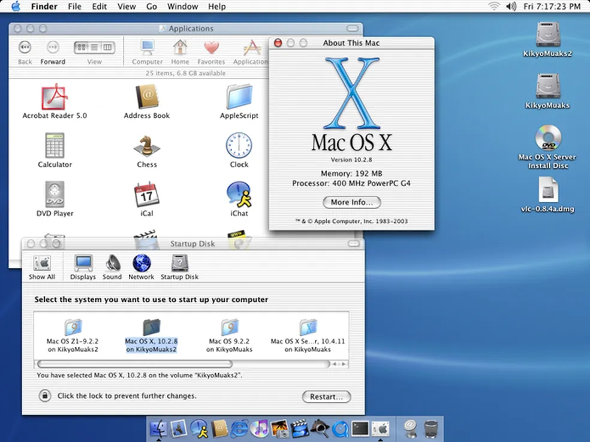

Século XXI - Do Windows XP e até a Nuvem
Entre o final da década de 90 até a atualidade, a Informatica vem se tornando cada vez mais compacta, em termo de espaço ocupado pelos equipamentos e mais ampla em termo de capacidade armazenamento.
Anos 2000s e os Sistemas Operacionais
Em 2001, a Apple apresentou o Mac OS X, que significou um avanço nos sistemas operacionais, devido a sua interface mais inteligevel e funcionalidades avançadas. Para fazer contra ponto, a Microsoft lança o Windows XP, que trouxe estabilidade, segurança e uma interface mais amigavel aos usuários.

Para fazer contra ponto, a Microsoft lança o Windows XP, que trouxe estabilidade, segurança e uma interface mais amigavel aos usuários.